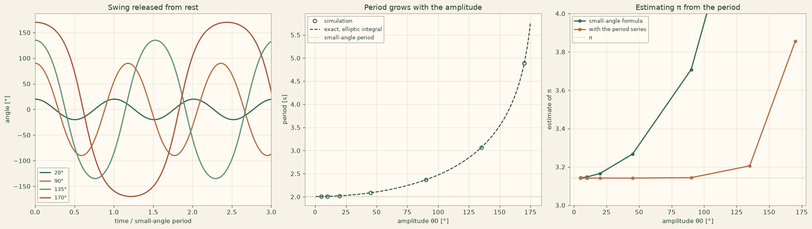

Docs › Examples › Estimating π with a pendulum
Multibody dynamics · 0D
Estimating π with a pendulum
A simple pendulum released at amplitudes from 5 to 170 degrees, whose measured period gives an estimate of π.
Run locally with OneSimulation. The example downloads are free. Running them requires an activated runtime. Runtime Alpha 0.2.1a8 · CPython 3.13 on macOS (Apple Silicon), Ubuntu 22.04 (x86-64), and Windows x64. Installation and activation · View pilot plans. Scope of the reference checks.


What it computes
OneSimulation integrates the pendulum's equation of motion with the classical Runge-Kutta method for each amplitude and measures the period from the zero crossings of the angle. π follows from the period with the small-angle formula and with the large-amplitude period series.
What it checks
All seven periods agree with the exact elliptic-integral period within 3e-7 %; the corrected estimate gives π = 3.141593 up to 45° and 3.1437 at 90°, while the small-angle formula drifts to 3.708 at 90°; energy is conserved to 8e-10.
The notebook
The complete notebook, cell by cell. Run it to produce the figures and the comparison printout.
A point mass on a massless rod of length \(L\) swings in a vertical plane under gravity \(g\). Its angle \(\theta\) from the vertical obeys
For small swings \(\sin\theta\approx\theta\) and the period is \(T_0=2\pi\sqrt{L/g}\), so a stopwatch and a tape measure give an estimate of π:
The period, however, grows with the amplitude \(\theta_0\). Exactly,
with \(K\) the complete elliptic integral of the first kind. Dividing the measured period by the bracket corrects the estimate for the amplitude.
Reference. L. D. Landau and E. M. Lifshitz, Mechanics, 3rd ed., Pergamon (1976), §11, problem 1 (period as an elliptic integral); R. A. Nelson and M. G. Olsson, The pendulum — rich physics from a simple system, Am. J. Phys. 54 (1986) 112 (period series).
import numpy as np
from onesim.cad.geometry import LumpedDomain
from onesim.meshing import LumpedMesh
from onesim.numerics import Numerics
from onesim.numerics.discretization import LumpedParameters
from onesim.numerics.time import ClassicalRungeKutta4
from onesim.physics.multibody import SimplePendulum
from onesim.results.sampling import crossing_times
from onesim.simulation import Problem, Simulation
from onesim.simulation.initial_conditions import InitialValue
from onesim.visualization import plots, theme
from scipy.special import ellipk
theme.set()Model
SimplePendulum holds the equation of motion; a 1 m pendulum with a 0.5 kg bob. Each amplitude is one simulation, released from rest and integrated over six small-angle periods with the classical Runge-Kutta method and a step of 5 ms.
length, gravity = 1.0, 9.81
domain = LumpedDomain()
pendulum = SimplePendulum(
domain=domain.system, length=length, mass=0.5, gravity=gravity
)
amplitudes = [5, 10, 20, 45, 90, 135, 170]
numerics = Numerics(spatial=LumpedParameters(), time_integrator=ClassicalRungeKutta4())
runs = {
amplitude: Simulation(
problem=Problem(
name=f"Pendulum released at {amplitude}°",
geometry=domain,
physics=(pendulum,),
initial_conditions=(
InitialValue(pendulum.angle, np.radians(amplitude)),
InitialValue(pendulum.angular_velocity, 0.0),
),
),
mesh=LumpedMesh(domain),
numerics=numerics,
).run(
start_time=0.0, end_time=12 * np.pi * np.sqrt(length / gravity), time_step=0.005
)
for amplitude in amplitudes
}Results
The period is the mean spacing of the downward zero crossings of the angle. From it π is estimated with the small-angle formula and with the period series up to \(\theta_0^6\).
series = (
lambda amplitude: 1
+ amplitude**2 / 16
+ 11 * amplitude**4 / 3072
+ 173 * amplitude**6 / 737280
)
periods = {
amplitude: np.diff(
crossing_times(
*run.field(pendulum.angle).time_series(), 0.0, direction="falling"
)
).mean()
for amplitude, run in runs.items()
}
exact = {
amplitude: 4
* np.sqrt(length / gravity)
* ellipk(np.sin(np.radians(amplitude) / 2) ** 2)
for amplitude in amplitudes
}
naive = {
amplitude: period / 2 * np.sqrt(gravity / length)
for amplitude, period in periods.items()
}
corrected = {
amplitude: estimate / series(np.radians(amplitude))
for amplitude, estimate in naive.items()
}
energies = {
amplitude: run.field(pendulum.energy).time_series()[1]
for amplitude, run in runs.items()
}
print(
"amplitude period [s] exact [s] deviation π small-angle π corrected energy drift"
)
for amplitude in amplitudes:
print(
f"{amplitude:7d}° {periods[amplitude]:11.6f} {exact[amplitude]:11.6f} {100 * (periods[amplitude] / exact[amplitude] - 1):+10.1e} %"
f" {naive[amplitude]:13.6f} {corrected[amplitude]:13.6f} {np.ptp(energies[amplitude]) / energies[amplitude][0]:12.1e}"
)
print(f"π = {np.pi:.6f}")Figure
The swing at four amplitudes in units of the small-angle period, the period against the amplitude with the exact elliptic-integral curve and the small-angle value, and the two estimates of π.
fine = np.linspace(0.5, 175, 300)
small_angle = 2 * np.pi * np.sqrt(length / gravity)
fig = plots.figure(1, 3, size=(18, 5))
plots.line(
y={
f"{amplitude}°": (
run.field(pendulum.angle).time_series()[0] / small_angle,
np.degrees(run.field(pendulum.angle).time_series()[1]),
)
for amplitude, run in runs.items()
if amplitude in (20, 90, 135, 170)
},
xlimits=(0, 3),
xlabel="time / small-angle period",
ylabel="angle [°]",
title="Swing released from rest",
legend="lower left",
ax=fig[0],
)
plots.line(
points={"simulation": (amplitudes, list(periods.values()))},
reference={
"exact, elliptic integral": (
fine,
4 * np.sqrt(length / gravity) * ellipk(np.sin(np.radians(fine) / 2) ** 2),
)
},
hlines={"small-angle period": small_angle},
xlabel="amplitude θ0 [°]",
ylabel="period [s]",
title="Period grows with the amplitude",
legend="upper left",
ax=fig[1],
)
plots.line(
amplitudes,
{
"small-angle formula": list(naive.values()),
"with the period series": list(corrected.values()),
},
markers=True,
hlines={"π": np.pi},
ylimits=(3.0, 4.0),
xlabel="amplitude θ0 [°]",
ylabel="estimate of π",
title="Estimating π from the period",
legend="upper left",
ax=fig[2],
)
plots.show()Going further
Add a damping torque or a periodic drive through applied_torque, or give the pendulum the energy to go over the top: above the separatrix the angle grows without bound and the motion is a rotation instead of a swing.